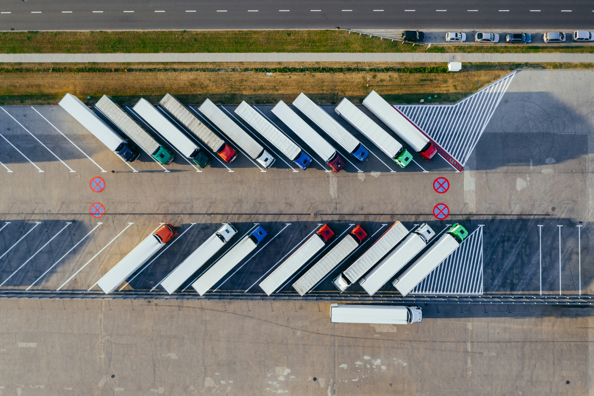
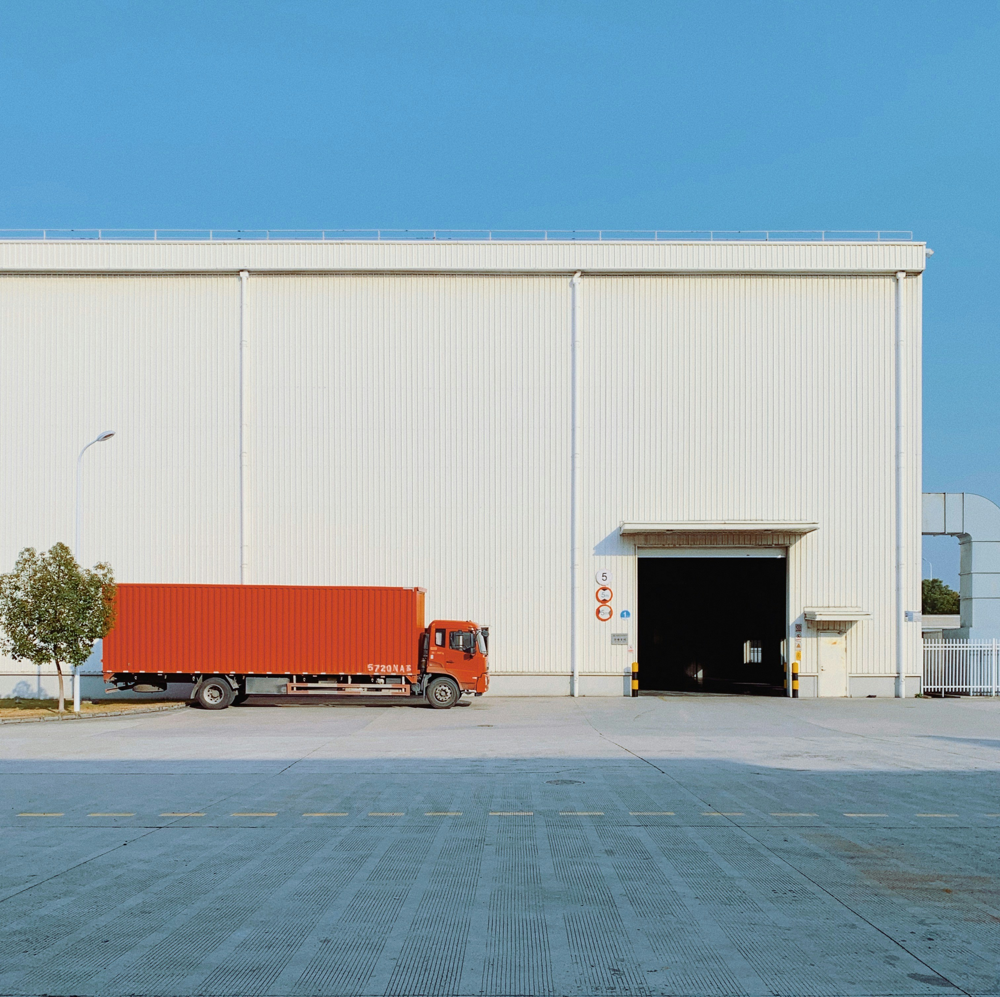

Kealedira Holdings connects leading consumer brands with retail networks across the region through reliable, seamless, and efficient distribution solutions. At Kealedira Holdings, we keep essential goods moving. As a trusted Fast-Moving Consumer Goods (FMCG) distribution partner, we bridge the gap between manufacturers and retail shelves. From high-volume dry groceries and beverages to personal and household care products, our optimized logistics network ensures that products arrive on time, every time.

Extensive Network - Direct reach into supermarkets, wholesalers, independent retailers, and specialty stores.
End-to-End Logistics - Modern warehousing, inventory management, and reliable fleet distribution.
Market Penetration - Strategic route-to-market planning that helps emerging and established brands grow.
Quality & Compliance - Strict adherence to storage, handling, and safety standards for all consumer goods.
Supply Chain & Distribution: Seamless end-to-end routing for high-velocity consumer products.
Warehousing & Storage: Climate-controlled, inventory-tracked distribution centers.
Brand Development: Helping brand owners expand retail shelf placement and market share.
Ready to optimize your retail supply chain? Whether you are a brand manufacturer seeking distribution or a retailer looking for consistent supply, Kealedira Holdings is your strategic partner.